Generate Diversity Profiles for Parametric Indices
Source:R/diversity.profile.R
diversity.profile.RdGenerate Diversity Profiles for Parametric Indices
Arguments
- x
A numeric or factor vector of observations.
- group
A factor vector indicating the group of each observation. Must have the same length as
x.- q
The order of the parametric index.
- na.omit
logical. If
TRUE, missing values (NA) are ignored and not included as a distinct factor level for computation. Default isTRUE.- ci.conf
Confidence level of the bootstrap interval. Default is 0.95.
- R
Integer specifying the number of permutations. Default is 1000.
- parameter
The parametric index. Options include
"hill","renyi"and"tsallis". Default is"hill".- ci.type
A vector of character strings representing the type of intervals required. The options are
c("perc", "bca").- parallel
The type of parallel operation to be used (if any). If missing, the default is taken from the option
"boot.parallel"(and if that is not set,"no").- ncpus
integer: number of processes to be used in parallel operation: typically one would chose this to the number of available CPUs.
- cl
An optional parallel or snow cluster for use if
parallel = "snow". If not supplied, a cluster on the local machine is created for the duration of thebootcall.- seed
Integer. Random seed used to ensure reproducibility of bootstrap. Default is 123.
Value
A list of data frames with the following columns for each factor
level in group.
- q
- observed
- mean
- lower
- upper
Examples
library(EvaluateCore)
library(dplyr)
#>
#> Attaching package: ‘dplyr’
#> The following objects are masked from ‘package:stats’:
#>
#> filter, lag
#> The following objects are masked from ‘package:base’:
#>
#> intersect, setdiff, setequal, union
library(ggplot2)
pdata <- cassava_CC
qual <- c("CUAL", "LNGS", "PTLC", "DSTA", "LFRT", "LBTEF", "CBTR", "NMLB",
"ANGB", "CUAL9M", "LVC9M", "TNPR9M", "PL9M", "STRP", "STRC",
"PSTR")
# Convert qualitative data columns to factor
pdata[, qual] <- lapply(pdata[, qual], as.factor)
str(pdata)
#> 'data.frame': 168 obs. of 26 variables:
#> $ CUAL : Factor w/ 4 levels "Dark green","Green purple",..: 3 1 2 2 2 2 4 2 2 1 ...
#> $ LNGS : Factor w/ 3 levels "Long","Medium",..: 3 1 2 2 2 2 2 1 1 1 ...
#> $ PTLC : Factor w/ 5 levels "Dark green","Green purple",..: 3 4 4 4 4 5 4 2 2 5 ...
#> $ DSTA : Factor w/ 5 levels "Absent","Central part",..: 1 5 5 5 5 5 5 4 2 5 ...
#> $ LFRT : Factor w/ 4 levels "25-50% leaf retention",..: 1 1 1 1 3 2 2 2 2 2 ...
#> $ LBTEF : Factor w/ 6 levels "0","1","2","3",..: 3 1 2 1 4 5 4 4 3 2 ...
#> $ CBTR : Factor w/ 3 levels "Cream","White",..: 2 2 2 2 1 2 1 1 1 1 ...
#> $ NMLB : Factor w/ 9 levels "0","1","2","3",..: 3 1 2 1 4 4 4 3 3 4 ...
#> $ ANGB : Factor w/ 4 levels "150-300","450-600",..: 1 4 1 4 2 2 2 1 2 2 ...
#> $ CUAL9M: Factor w/ 5 levels "Dark green","Green",..: 1 1 3 5 3 3 5 5 5 4 ...
#> $ LVC9M : Factor w/ 5 levels "Dark green","Green",..: 4 3 3 3 3 1 3 1 4 3 ...
#> $ TNPR9M: Factor w/ 5 levels "1","2","3","4",..: 5 5 4 2 5 4 2 5 5 5 ...
#> $ PL9M : Factor w/ 2 levels "Long (25-30cm)",..: 2 2 1 1 1 1 1 1 2 2 ...
#> $ STRP : Factor w/ 4 levels "Absent","Intermediate",..: 2 3 1 1 1 1 4 1 1 4 ...
#> $ STRC : Factor w/ 2 levels "Absent","Present": 2 2 1 2 1 1 2 1 1 2 ...
#> $ PSTR : Factor w/ 2 levels "Irregular","Tending toward horizontal": 1 2 2 2 1 2 2 2 1 2 ...
#> $ NMSR : num 6 2 6 2 20 13 4 14 10 5 ...
#> $ TTRN : num 3 0.5 3 2 5 ...
#> $ TFWSR : num 1.4 2.6 1.2 1.6 5 7 4.2 2.8 2.8 4 ...
#> $ TTRW : num 0.7 0.65 0.6 1.6 1.25 ...
#> $ TFWSS : num 1 2.8 2.8 2.4 16 12 9 4.4 6.2 5 ...
#> $ TTSW : num 0.5 0.7 1.4 2.4 4 ...
#> $ TTPW : num 2.4 5.4 4 4 21 19 13.2 7.2 9 9 ...
#> $ AVPW : num 1.2 1.35 2 4 5.25 4.75 3.3 2.4 1.8 2.25 ...
#> $ ARSR : num 2 0 2 0 3 0 0 6 0 0 ...
#> $ SRDM : num 42 39.8 29.7 43 37.9 37 38.9 36.9 41 37.9 ...
important_q <- c(0, 1, 2)
important_labels <- c("0D", "1D", "2D")
# Hill profile - Percentile CIs ----
hill_profile1 <-
diversity.profile(x = pdata$CUAL, group = pdata$LNGS,
parameter = "hill", ci.type = "perc")
hill_profile1
#> $Long
#> q observed mean lower upper ci.type
#> 1 0.0 3.000000 3.000000 3.000000 3.000000 perc
#> 2 0.1 2.970041 2.964396 2.923097 2.991291 perc
#> 3 0.2 2.940750 2.930025 2.847641 2.982579 perc
#> 4 0.3 2.912153 2.896897 2.777695 2.973868 perc
#> 5 0.4 2.884272 2.865010 2.714407 2.965161 perc
#> 6 0.5 2.857124 2.834357 2.655041 2.956465 perc
#> 7 0.6 2.830721 2.804920 2.594772 2.947961 perc
#> 8 0.7 2.805073 2.776678 2.542195 2.939567 perc
#> 9 0.8 2.780186 2.749604 2.492942 2.931259 perc
#> 10 0.9 2.756060 2.723669 2.444663 2.923039 perc
#> 11 1.0 2.732695 2.698838 2.401727 2.914911 perc
#> 12 1.1 2.710085 2.675076 2.360632 2.906876 perc
#> 13 1.2 2.688224 2.652346 2.322265 2.898936 perc
#> 14 1.3 2.667101 2.630610 2.286326 2.891093 perc
#> 15 1.4 2.646704 2.609829 2.251034 2.883347 perc
#> 16 1.5 2.627019 2.589964 2.213515 2.875701 perc
#> 17 1.6 2.608031 2.570976 2.193260 2.868155 perc
#> 18 1.7 2.589722 2.552827 2.166255 2.861209 perc
#> 19 1.8 2.572075 2.535479 2.141015 2.854648 perc
#> 20 1.9 2.555070 2.518895 2.117440 2.846868 perc
#> 21 2.0 2.538688 2.503039 2.095392 2.838992 perc
#> 22 2.1 2.522908 2.487876 2.074753 2.832778 perc
#> 23 2.2 2.507711 2.473374 2.055414 2.826724 perc
#> 24 2.3 2.493075 2.459498 2.034404 2.820827 perc
#> 25 2.4 2.478981 2.446219 2.013563 2.815084 perc
#> 26 2.5 2.465409 2.433507 1.993954 2.809492 perc
#> 27 2.6 2.452337 2.421334 1.975558 2.804047 perc
#> 28 2.7 2.439748 2.409671 1.961121 2.798747 perc
#> 29 2.8 2.427621 2.398494 1.948792 2.793588 perc
#> 30 2.9 2.415938 2.387778 1.937168 2.788567 perc
#> 31 3.0 2.404680 2.377500 1.926174 2.783681 perc
#>
#> $Medium
#> q observed mean lower upper ci.type
#> 1 0.0 4.000000 3.666000 3.000000 4.000000 perc
#> 2 0.1 3.775167 3.516989 2.923097 3.878297 perc
#> 3 0.2 3.586424 3.386800 2.847634 3.767373 perc
#> 4 0.3 3.427791 3.272833 2.773871 3.662339 perc
#> 5 0.4 3.293906 3.172693 2.702164 3.568402 perc
#> 6 0.5 3.180150 3.084255 2.632733 3.490166 perc
#> 7 0.6 3.082659 3.005688 2.566049 3.408612 perc
#> 8 0.7 2.998274 2.935445 2.502101 3.345846 perc
#> 9 0.8 2.924454 2.872240 2.443287 3.282668 perc
#> 10 0.9 2.859178 2.815012 2.388275 3.224429 perc
#> 11 1.0 2.800853 2.841114 2.436467 3.204581 perc
#> 12 1.1 2.748230 2.715162 2.267646 3.136051 perc
#> 13 1.2 2.700330 2.671245 2.219155 3.098172 perc
#> 14 1.3 2.656390 2.630661 2.176987 3.067293 perc
#> 15 1.4 2.615811 2.593014 2.131208 3.038963 perc
#> 16 1.5 2.578125 2.557979 2.092109 3.004722 perc
#> 17 1.6 2.542961 2.525280 2.056051 2.980671 perc
#> 18 1.7 2.510025 2.494688 2.022596 2.963510 perc
#> 19 1.8 2.479080 2.466006 1.991432 2.935906 perc
#> 20 1.9 2.449934 2.439065 1.962551 2.919617 perc
#> 21 2.0 2.422430 2.413721 1.935809 2.896089 perc
#> 22 2.1 2.396434 2.389844 1.911306 2.878513 perc
#> 23 2.2 2.371835 2.367323 1.888134 2.861863 perc
#> 24 2.3 2.348536 2.346057 1.866910 2.844973 perc
#> 25 2.4 2.326451 2.325955 1.847236 2.825532 perc
#> 26 2.5 2.305505 2.306938 1.828991 2.808036 perc
#> 27 2.6 2.285629 2.288931 1.812058 2.798856 perc
#> 28 2.7 2.266761 2.271868 1.796332 2.788377 perc
#> 29 2.8 2.248843 2.255687 1.781714 2.775758 perc
#> 30 2.9 2.231821 2.240331 1.768112 2.759734 perc
#> 31 3.0 2.215647 2.225748 1.755445 2.742463 perc
#>
#> $Short
#> q observed mean lower upper ci.type
#> 1 0.0 4.000000 3.855000 3.000000 4.000000 perc
#> 2 0.1 3.933810 3.773964 2.937054 3.985374 perc
#> 3 0.2 3.870196 3.697542 2.875873 3.970875 perc
#> 4 0.3 3.809136 3.625626 2.816588 3.956509 perc
#> 5 0.4 3.750595 3.558068 2.759273 3.942284 perc
#> 6 0.5 3.694521 3.494692 2.704058 3.928205 perc
#> 7 0.6 3.640856 3.435300 2.653713 3.914279 perc
#> 8 0.7 3.589527 3.379678 2.613382 3.900512 perc
#> 9 0.8 3.540459 3.327608 2.550539 3.886908 perc
#> 10 0.9 3.493567 3.278870 2.504391 3.873474 perc
#> 11 1.0 3.448767 3.233963 2.451111 3.861288 perc
#> 12 1.1 3.405970 3.190520 2.395381 3.847131 perc
#> 13 1.2 3.365087 3.150495 2.363287 3.834239 perc
#> 14 1.3 3.326031 3.112977 2.333547 3.821632 perc
#> 15 1.4 3.288713 3.077784 2.306212 3.809225 perc
#> 16 1.5 3.253050 3.044747 2.260804 3.797020 perc
#> 17 1.6 3.218958 3.013707 2.208356 3.785018 perc
#> 18 1.7 3.186359 2.984518 2.160763 3.773221 perc
#> 19 1.8 3.155176 2.957043 2.117549 3.761629 perc
#> 20 1.9 3.125338 2.931159 2.078278 3.750242 perc
#> 21 2.0 3.096774 2.906748 2.042553 3.739061 perc
#> 22 2.1 3.069420 2.883704 2.010015 3.728085 perc
#> 23 2.2 3.043214 2.861930 1.980341 3.717313 perc
#> 24 2.3 3.018098 2.841335 1.953239 3.706745 perc
#> 25 2.4 2.994016 2.821837 1.928449 3.696380 perc
#> 26 2.5 2.970917 2.803359 1.905739 3.686216 perc
#> 27 2.6 2.948751 2.785831 1.884899 3.676251 perc
#> 28 2.7 2.927474 2.769188 1.865745 3.666485 perc
#> 29 2.8 2.907041 2.753372 1.848111 3.656914 perc
#> 30 2.9 2.887412 2.738327 1.831849 3.647538 perc
#> 31 3.0 2.868549 2.724004 1.816827 3.638352 perc
#>
#> attr(,"R")
#> [1] 1000
#> attr(,"conf")
#> [1] 0.95
#> attr(,"parameter")
#> [1] "hill"
#> attr(,"ci.type")
#> [1] "perc"
hill_profile1_df <- dplyr::bind_rows(hill_profile1, .id = "group")
hill_points1_df <- hill_profile1_df %>%
filter(q %in% important_q) %>%
mutate(order_label = factor(q, levels = important_q,
labels = important_labels))
ggplot(hill_profile1_df, aes(x = q, y = observed,
color = group, fill = group)) +
geom_ribbon(aes(ymin = lower, ymax = upper), alpha = 0.2, color = NA) +
geom_line(linewidth = 1) +
geom_vline(xintercept = c(0, 1, 2), linetype = "dashed",
color = "grey60") +
geom_point(data = hill_points1_df, aes(shape = order_label),
size = 3, stroke = 1, inherit.aes = TRUE) +
scale_shape_manual(values = c(17, 19, 15), name = "Important q") +
labs(x = "Order (q)", y = "Hill number",
color = "Group", fill = "Group") +
theme_bw()
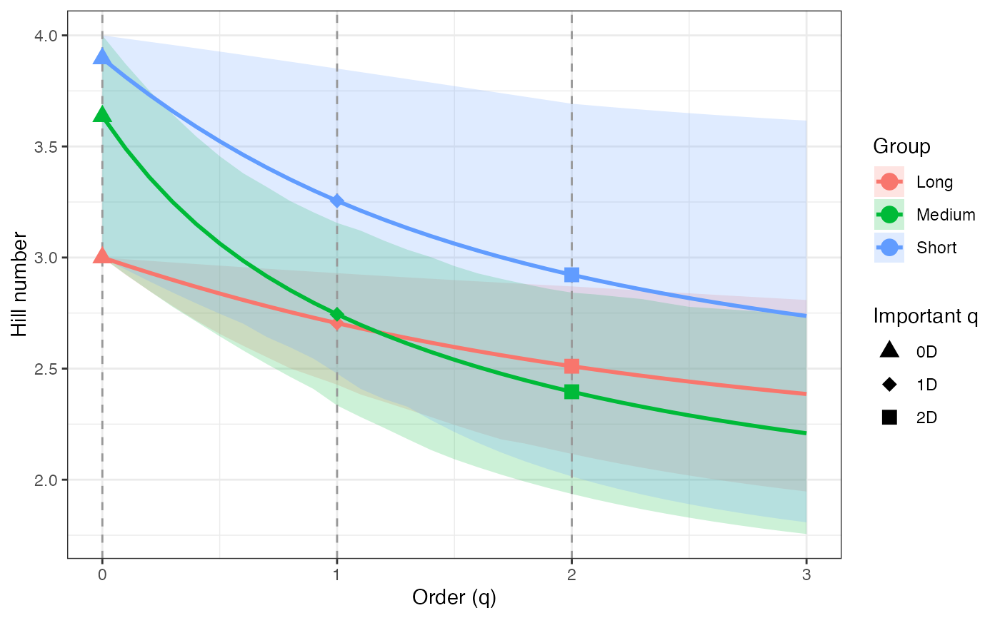
ggplot(hill_profile1_df, aes(x = q, y = observed)) +
geom_ribbon(aes(ymin = lower, ymax = upper), fill = "grey80") +
geom_line(color = "black", linewidth = 1) +
facet_wrap(~ group, scales = "free_y") +
labs(x = "Order (q)", y = "Hill number") +
theme_bw()
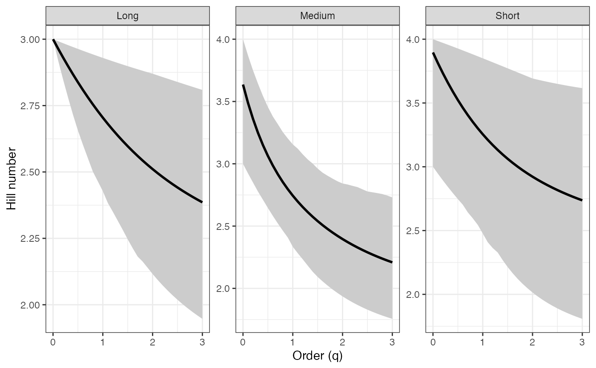
# Rényi profile - Percentile CIs ----
renyi_profile1 <-
diversity.profile(pdata$CUAL, group = pdata$LNGS,
parameter = "renyi", ci.type = "perc")
renyi_profile1
#> $Long
#> q observed mean lower upper ci.type
#> 1 0.0 1.0986123 1.0986123 1.0986123 1.098612 perc
#> 2 0.1 1.0885756 1.0866529 1.0726436 1.095705 perc
#> 3 0.2 1.0786646 1.0749332 1.0464908 1.092788 perc
#> 4 0.3 1.0688928 1.0634739 1.0216214 1.089863 perc
#> 5 0.4 1.0592726 1.0522917 0.9985736 1.086931 perc
#> 6 0.5 1.0498155 1.0414000 0.9764601 1.083994 perc
#> 7 0.6 1.0405315 1.0308087 0.9534986 1.081114 perc
#> 8 0.7 1.0314297 1.0205248 0.9330281 1.078262 perc
#> 9 0.8 1.0225177 1.0105528 0.9134634 1.075432 perc
#> 10 0.9 1.0138021 1.0008947 0.8939074 1.072624 perc
#> 11 1.0 1.0052882 0.9915506 0.8761880 1.069839 perc
#> 12 1.1 0.9969801 0.9825189 0.8589295 1.067079 perc
#> 13 1.2 0.9888807 0.9737963 0.8425429 1.064344 perc
#> 14 1.3 0.9809920 0.9653785 0.8269461 1.061635 perc
#> 15 1.4 0.9733151 0.9572599 0.8113897 1.058952 perc
#> 16 1.5 0.9658499 0.9494341 0.7945815 1.056296 perc
#> 17 1.6 0.9585956 0.9418941 0.7853890 1.053669 perc
#> 18 1.7 0.9515507 0.9346321 0.7730000 1.051244 perc
#> 19 1.8 0.9447130 0.9276399 0.7612801 1.048949 perc
#> 20 1.9 0.9380796 0.9209093 0.7502080 1.046219 perc
#> 21 2.0 0.9316472 0.9144314 0.7397407 1.043449 perc
#> 22 2.1 0.9254122 0.9081976 0.7298421 1.041258 perc
#> 23 2.2 0.9193702 0.9021989 0.7204775 1.039118 perc
#> 24 2.3 0.9135169 0.8964267 0.7102029 1.037030 perc
#> 25 2.4 0.9078477 0.8908721 0.6999060 1.034992 perc
#> 26 2.5 0.9023576 0.8855266 0.6901195 1.033004 perc
#> 27 2.6 0.8970416 0.8803818 0.6808507 1.031064 perc
#> 28 2.7 0.8918947 0.8754293 0.6735163 1.029172 perc
#> 29 2.8 0.8869118 0.8706613 0.6672095 1.027327 perc
#> 30 2.9 0.8820876 0.8660698 0.6612269 1.025528 perc
#> 31 3.0 0.8774170 0.8616474 0.6555355 1.023774 perc
#>
#> $Medium
#> q observed mean lower upper ci.type
#> 1 0.0 1.3862944 1.2902085 1.0986123 1.386294 perc
#> 2 0.1 1.3284446 1.2507854 1.0726436 1.355396 perc
#> 3 0.2 1.2771555 1.2145616 1.0464884 1.326378 perc
#> 4 0.3 1.2319160 1.1813815 1.0202438 1.298102 perc
#> 5 0.4 1.1920742 1.1510156 0.9940529 1.272118 perc
#> 6 0.5 1.1569284 1.1231985 0.9680225 1.249949 perc
#> 7 0.6 1.1257925 1.0976566 0.9423672 1.226305 perc
#> 8 0.7 1.0980367 1.0741281 0.9171308 1.207719 perc
#> 9 0.8 1.0731077 1.0523736 0.8933444 1.188657 perc
#> 10 0.9 1.0505342 1.0321809 0.8705714 1.170756 perc
#> 11 1.0 1.0299241 1.0419553 0.8905489 1.164581 perc
#> 12 1.1 1.0109570 0.9957735 0.8187421 1.142964 perc
#> 13 1.2 0.9933740 0.9792696 0.7971265 1.130812 perc
#> 14 1.3 0.9769680 0.9637432 0.7779420 1.120795 perc
#> 15 1.4 0.9615743 0.9491002 0.7566890 1.111516 perc
#> 16 1.5 0.9470625 0.9352615 0.7381724 1.100185 perc
#> 17 1.6 0.9333293 0.9221599 0.7207871 1.092148 perc
#> 18 1.7 0.9202928 0.9097378 0.7043815 1.086374 perc
#> 19 1.8 0.9078876 0.8979457 0.6888540 1.077016 perc
#> 20 1.9 0.8960613 0.8867404 0.6742453 1.071452 perc
#> 21 2.0 0.8847711 0.8760838 0.6605254 1.063361 perc
#> 22 2.1 0.8739819 0.8659418 0.6477867 1.057274 perc
#> 23 2.2 0.8636641 0.8562839 0.6355892 1.051473 perc
#> 24 2.3 0.8537922 0.8470824 0.6242844 1.045554 perc
#> 25 2.4 0.8443440 0.8383115 0.6136906 1.038697 perc
#> 26 2.5 0.8352998 0.8299479 0.6037644 1.032485 perc
#> 27 2.6 0.8266413 0.8219695 0.5944634 1.029211 perc
#> 28 2.7 0.8183519 0.8143559 0.5857468 1.025459 perc
#> 29 2.8 0.8104158 0.8070879 0.5775756 1.020924 perc
#> 30 2.9 0.8028180 0.8001475 0.5699125 1.015134 perc
#> 31 3.0 0.7955444 0.7935176 0.5627224 1.008857 perc
#>
#> $Short
#> q observed mean lower upper ci.type
#> 1 0.0 1.386294 1.3445805 1.0986123 1.386294 perc
#> 2 0.1 1.369609 1.3236255 1.0774068 1.382631 perc
#> 3 0.2 1.353305 1.3032979 1.0563559 1.378986 perc
#> 4 0.3 1.337402 1.2836452 1.0355251 1.375362 perc
#> 5 0.4 1.321914 1.2647026 1.0149658 1.371760 perc
#> 6 0.5 1.306851 1.2464938 0.9947513 1.368182 perc
#> 7 0.6 1.292219 1.2290319 0.9759597 1.364631 perc
#> 8 0.7 1.278021 1.2123206 0.9606453 1.361107 perc
#> 9 0.8 1.264256 1.1963551 0.9363046 1.357613 perc
#> 10 0.9 1.250923 1.1811243 0.9180456 1.354151 perc
#> 11 1.0 1.238017 1.1668558 0.8965413 1.351001 perc
#> 12 1.1 1.225530 1.1527943 0.8735410 1.347326 perc
#> 13 1.2 1.213454 1.1396495 0.8600529 1.343969 perc
#> 14 1.3 1.201780 1.1271498 0.8473894 1.340675 perc
#> 15 1.4 1.190496 1.1152673 0.8356063 1.337423 perc
#> 16 1.5 1.179593 1.1039729 0.8157206 1.334214 perc
#> 17 1.6 1.169058 1.0932378 0.7922485 1.331048 perc
#> 18 1.7 1.158879 1.0830331 0.7704616 1.327927 perc
#> 19 1.8 1.149044 1.0733307 0.7502594 1.324850 perc
#> 20 1.9 1.139542 1.0641032 0.7315397 1.321818 perc
#> 21 2.0 1.130361 1.0553243 0.7142006 1.318832 perc
#> 22 2.1 1.121489 1.0469689 0.6981423 1.315893 perc
#> 23 2.2 1.112914 1.0390127 0.6832689 1.312999 perc
#> 24 2.3 1.104627 1.0314331 0.6694889 1.310153 perc
#> 25 2.4 1.096616 1.0242084 0.6567161 1.307353 perc
#> 26 2.5 1.088871 1.0173181 0.6448696 1.304599 perc
#> 27 2.6 1.081382 1.0107432 0.6338744 1.301893 perc
#> 28 2.7 1.074140 1.0044654 0.6236607 1.299233 perc
#> 29 2.8 1.067136 0.9984678 0.6141642 1.296619 perc
#> 30 2.9 1.060361 0.9927344 0.6053259 1.294052 perc
#> 31 3.0 1.053806 0.9872503 0.5970915 1.291531 perc
#>
#> attr(,"R")
#> [1] 1000
#> attr(,"conf")
#> [1] 0.95
#> attr(,"parameter")
#> [1] "renyi"
#> attr(,"ci.type")
#> [1] "perc"
renyi_profile1_df <- dplyr::bind_rows(renyi_profile1, .id = "group")
renyi_points1_df <- renyi_profile1_df %>%
filter(q %in% important_q) %>%
mutate(order_label = factor(q, levels = important_q,
labels = important_labels))
ggplot(renyi_profile1_df, aes(x = q, y = observed,
color = group, fill = group)) +
geom_ribbon(aes(ymin = lower, ymax = upper), alpha = 0.2, color = NA) +
geom_line(linewidth = 1) +
geom_vline(xintercept = c(0, 1, 2), linetype = "dashed",
color = "grey60") +
geom_point(data = renyi_points1_df, aes(shape = order_label),
size = 3, stroke = 1, inherit.aes = TRUE) +
scale_shape_manual(values = c(17, 19, 15), name = "Important q") +
labs(x = "Order (q)", y = "Hill number",
color = "Group", fill = "Group") +
theme_bw()
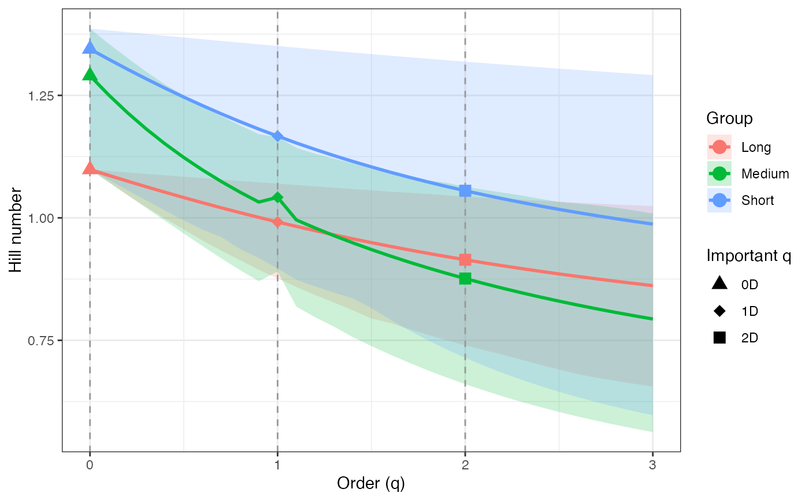
ggplot(renyi_profile1_df, aes(x = q, y = observed)) +
geom_ribbon(aes(ymin = lower, ymax = upper), fill = "grey80") +
geom_line(color = "black", linewidth = 1) +
facet_wrap(~ group, scales = "free_y") +
labs(x = "Order (q)", y = "Hill number") +
theme_bw()
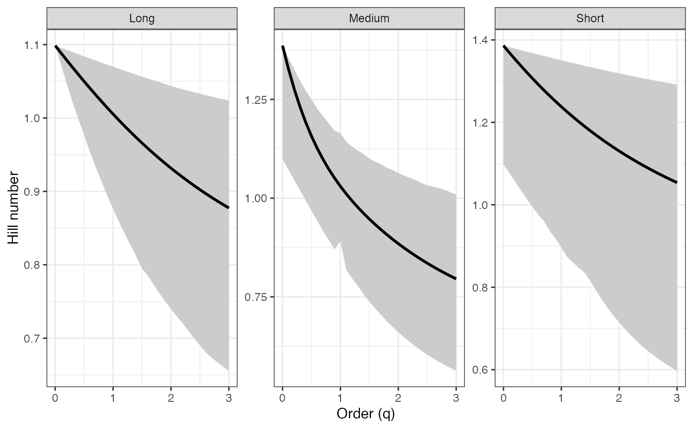
# Tsallis profile - Percentile CIs ----
tsallis_profile1 <-
diversity.profile(pdata$CUAL, group = pdata$LNGS,
parameter = "tsallis", ci.type = "perc")
tsallis_profile1 <-
diversity.profile(x = pdata$CUAL, group = pdata$LNGS,
parameter = "hill", ci.type = "perc")
tsallis_profile1
#> $Long
#> q observed mean lower upper ci.type
#> 1 0.0 3.000000 3.000000 3.000000 3.000000 perc
#> 2 0.1 2.970041 2.964396 2.923097 2.991291 perc
#> 3 0.2 2.940750 2.930025 2.847641 2.982579 perc
#> 4 0.3 2.912153 2.896897 2.777695 2.973868 perc
#> 5 0.4 2.884272 2.865010 2.714407 2.965161 perc
#> 6 0.5 2.857124 2.834357 2.655041 2.956465 perc
#> 7 0.6 2.830721 2.804920 2.594772 2.947961 perc
#> 8 0.7 2.805073 2.776678 2.542195 2.939567 perc
#> 9 0.8 2.780186 2.749604 2.492942 2.931259 perc
#> 10 0.9 2.756060 2.723669 2.444663 2.923039 perc
#> 11 1.0 2.732695 2.698838 2.401727 2.914911 perc
#> 12 1.1 2.710085 2.675076 2.360632 2.906876 perc
#> 13 1.2 2.688224 2.652346 2.322265 2.898936 perc
#> 14 1.3 2.667101 2.630610 2.286326 2.891093 perc
#> 15 1.4 2.646704 2.609829 2.251034 2.883347 perc
#> 16 1.5 2.627019 2.589964 2.213515 2.875701 perc
#> 17 1.6 2.608031 2.570976 2.193260 2.868155 perc
#> 18 1.7 2.589722 2.552827 2.166255 2.861209 perc
#> 19 1.8 2.572075 2.535479 2.141015 2.854648 perc
#> 20 1.9 2.555070 2.518895 2.117440 2.846868 perc
#> 21 2.0 2.538688 2.503039 2.095392 2.838992 perc
#> 22 2.1 2.522908 2.487876 2.074753 2.832778 perc
#> 23 2.2 2.507711 2.473374 2.055414 2.826724 perc
#> 24 2.3 2.493075 2.459498 2.034404 2.820827 perc
#> 25 2.4 2.478981 2.446219 2.013563 2.815084 perc
#> 26 2.5 2.465409 2.433507 1.993954 2.809492 perc
#> 27 2.6 2.452337 2.421334 1.975558 2.804047 perc
#> 28 2.7 2.439748 2.409671 1.961121 2.798747 perc
#> 29 2.8 2.427621 2.398494 1.948792 2.793588 perc
#> 30 2.9 2.415938 2.387778 1.937168 2.788567 perc
#> 31 3.0 2.404680 2.377500 1.926174 2.783681 perc
#>
#> $Medium
#> q observed mean lower upper ci.type
#> 1 0.0 4.000000 3.666000 3.000000 4.000000 perc
#> 2 0.1 3.775167 3.516989 2.923097 3.878297 perc
#> 3 0.2 3.586424 3.386800 2.847634 3.767373 perc
#> 4 0.3 3.427791 3.272833 2.773871 3.662339 perc
#> 5 0.4 3.293906 3.172693 2.702164 3.568402 perc
#> 6 0.5 3.180150 3.084255 2.632733 3.490166 perc
#> 7 0.6 3.082659 3.005688 2.566049 3.408612 perc
#> 8 0.7 2.998274 2.935445 2.502101 3.345846 perc
#> 9 0.8 2.924454 2.872240 2.443287 3.282668 perc
#> 10 0.9 2.859178 2.815012 2.388275 3.224429 perc
#> 11 1.0 2.800853 2.841114 2.436467 3.204581 perc
#> 12 1.1 2.748230 2.715162 2.267646 3.136051 perc
#> 13 1.2 2.700330 2.671245 2.219155 3.098172 perc
#> 14 1.3 2.656390 2.630661 2.176987 3.067293 perc
#> 15 1.4 2.615811 2.593014 2.131208 3.038963 perc
#> 16 1.5 2.578125 2.557979 2.092109 3.004722 perc
#> 17 1.6 2.542961 2.525280 2.056051 2.980671 perc
#> 18 1.7 2.510025 2.494688 2.022596 2.963510 perc
#> 19 1.8 2.479080 2.466006 1.991432 2.935906 perc
#> 20 1.9 2.449934 2.439065 1.962551 2.919617 perc
#> 21 2.0 2.422430 2.413721 1.935809 2.896089 perc
#> 22 2.1 2.396434 2.389844 1.911306 2.878513 perc
#> 23 2.2 2.371835 2.367323 1.888134 2.861863 perc
#> 24 2.3 2.348536 2.346057 1.866910 2.844973 perc
#> 25 2.4 2.326451 2.325955 1.847236 2.825532 perc
#> 26 2.5 2.305505 2.306938 1.828991 2.808036 perc
#> 27 2.6 2.285629 2.288931 1.812058 2.798856 perc
#> 28 2.7 2.266761 2.271868 1.796332 2.788377 perc
#> 29 2.8 2.248843 2.255687 1.781714 2.775758 perc
#> 30 2.9 2.231821 2.240331 1.768112 2.759734 perc
#> 31 3.0 2.215647 2.225748 1.755445 2.742463 perc
#>
#> $Short
#> q observed mean lower upper ci.type
#> 1 0.0 4.000000 3.855000 3.000000 4.000000 perc
#> 2 0.1 3.933810 3.773964 2.937054 3.985374 perc
#> 3 0.2 3.870196 3.697542 2.875873 3.970875 perc
#> 4 0.3 3.809136 3.625626 2.816588 3.956509 perc
#> 5 0.4 3.750595 3.558068 2.759273 3.942284 perc
#> 6 0.5 3.694521 3.494692 2.704058 3.928205 perc
#> 7 0.6 3.640856 3.435300 2.653713 3.914279 perc
#> 8 0.7 3.589527 3.379678 2.613382 3.900512 perc
#> 9 0.8 3.540459 3.327608 2.550539 3.886908 perc
#> 10 0.9 3.493567 3.278870 2.504391 3.873474 perc
#> 11 1.0 3.448767 3.233963 2.451111 3.861288 perc
#> 12 1.1 3.405970 3.190520 2.395381 3.847131 perc
#> 13 1.2 3.365087 3.150495 2.363287 3.834239 perc
#> 14 1.3 3.326031 3.112977 2.333547 3.821632 perc
#> 15 1.4 3.288713 3.077784 2.306212 3.809225 perc
#> 16 1.5 3.253050 3.044747 2.260804 3.797020 perc
#> 17 1.6 3.218958 3.013707 2.208356 3.785018 perc
#> 18 1.7 3.186359 2.984518 2.160763 3.773221 perc
#> 19 1.8 3.155176 2.957043 2.117549 3.761629 perc
#> 20 1.9 3.125338 2.931159 2.078278 3.750242 perc
#> 21 2.0 3.096774 2.906748 2.042553 3.739061 perc
#> 22 2.1 3.069420 2.883704 2.010015 3.728085 perc
#> 23 2.2 3.043214 2.861930 1.980341 3.717313 perc
#> 24 2.3 3.018098 2.841335 1.953239 3.706745 perc
#> 25 2.4 2.994016 2.821837 1.928449 3.696380 perc
#> 26 2.5 2.970917 2.803359 1.905739 3.686216 perc
#> 27 2.6 2.948751 2.785831 1.884899 3.676251 perc
#> 28 2.7 2.927474 2.769188 1.865745 3.666485 perc
#> 29 2.8 2.907041 2.753372 1.848111 3.656914 perc
#> 30 2.9 2.887412 2.738327 1.831849 3.647538 perc
#> 31 3.0 2.868549 2.724004 1.816827 3.638352 perc
#>
#> attr(,"R")
#> [1] 1000
#> attr(,"conf")
#> [1] 0.95
#> attr(,"parameter")
#> [1] "hill"
#> attr(,"ci.type")
#> [1] "perc"
tsallis_profile1_df <- dplyr::bind_rows(tsallis_profile1, .id = "group")
tsallis_points1_df <- tsallis_profile1_df %>%
filter(q %in% important_q) %>%
mutate(order_label = factor(q, levels = important_q,
labels = important_labels))
ggplot(tsallis_profile1_df, aes(x = q, y = observed,
color = group, fill = group)) +
geom_ribbon(aes(ymin = lower, ymax = upper), alpha = 0.2, color = NA) +
geom_line(linewidth = 1) +
geom_vline(xintercept = c(0, 1, 2), linetype = "dashed",
color = "grey60") +
geom_point(data = tsallis_points1_df, aes(shape = order_label),
size = 3, stroke = 1, inherit.aes = TRUE) +
scale_shape_manual(values = c(17, 19, 15), name = "Important q") +
labs(x = "Order (q)", y = "Hill number",
color = "Group", fill = "Group") +
theme_bw()
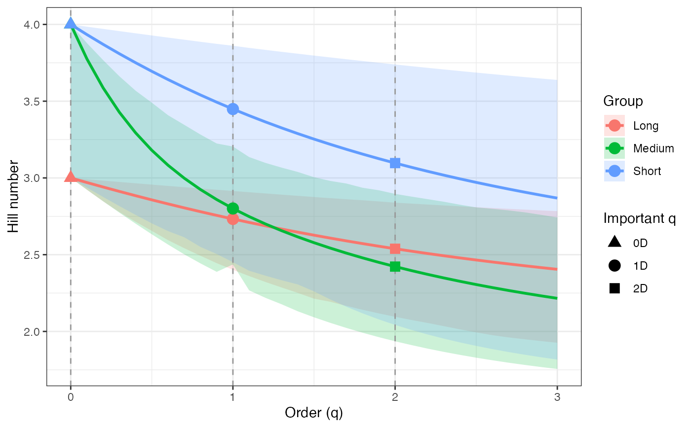
ggplot(tsallis_profile1_df, aes(x = q, y = observed)) +
geom_ribbon(aes(ymin = lower, ymax = upper), fill = "grey80") +
geom_line(color = "black", linewidth = 1) +
facet_wrap(~ group, scales = "free_y") +
labs(x = "Order (q)", y = "Hill number") +
theme_bw()
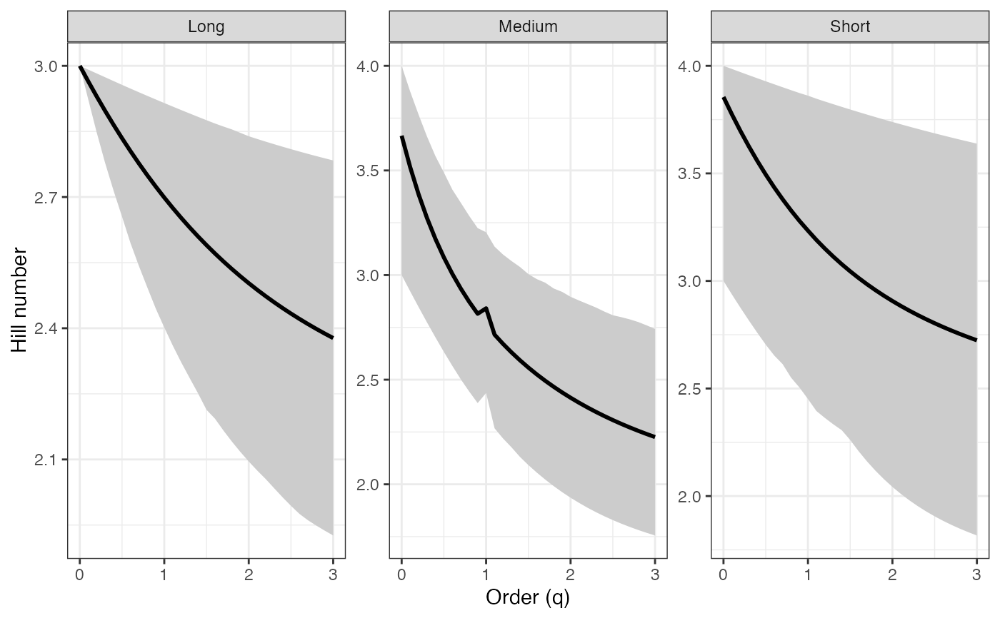
# Hill profile - BCa CIs ----
hill_profile2 <-
diversity.profile(pdata$CUAL, group = pdata$LNGS,
parameter = "hill", ci.type = "bca")
#> Warning: [Group: Long] No bootstrap variation; CI collapses to a point for component 1. Using percentile.
hill_profile2
#> $Long
#> q observed mean lower upper ci.type
#> 1 0.0 3.000000 3.000000 3.000000 3.000000 perc
#> 2 0.1 2.970041 2.964396 2.933829 2.994698 bca
#> 3 0.2 2.940750 2.930025 2.868685 2.988583 bca
#> 4 0.3 2.912153 2.896897 2.806813 2.982604 bca
#> 5 0.4 2.884272 2.865010 2.746171 2.976442 bca
#> 6 0.5 2.857124 2.834357 2.692099 2.968203 bca
#> 7 0.6 2.830721 2.804920 2.644216 2.965919 bca
#> 8 0.7 2.805073 2.776678 2.595052 2.959599 bca
#> 9 0.8 2.780186 2.749604 2.551489 2.953114 bca
#> 10 0.9 2.756060 2.723669 2.510974 2.946474 bca
#> 11 1.0 2.732695 2.698838 2.463106 2.936277 bca
#> 12 1.1 2.710085 2.675076 2.431537 2.931497 bca
#> 13 1.2 2.688224 2.652346 2.405739 2.935475 bca
#> 14 1.3 2.667101 2.630610 2.375454 2.929071 bca
#> 15 1.4 2.646704 2.609829 2.347264 2.922578 bca
#> 16 1.5 2.627019 2.589964 2.314981 2.914400 bca
#> 17 1.6 2.608031 2.570976 2.281790 2.902471 bca
#> 18 1.7 2.589722 2.552827 2.250259 2.896654 bca
#> 19 1.8 2.572075 2.535479 2.221330 2.891044 bca
#> 20 1.9 2.555070 2.518895 2.198987 2.885492 bca
#> 21 2.0 2.538688 2.503039 2.160000 2.876804 bca
#> 22 2.1 2.522908 2.487876 2.138888 2.871829 bca
#> 23 2.2 2.507711 2.473374 2.119023 2.866962 bca
#> 24 2.3 2.493075 2.459498 2.100319 2.862201 bca
#> 25 2.4 2.478981 2.446219 2.082922 2.857544 bca
#> 26 2.5 2.465409 2.433507 2.062561 2.852990 bca
#> 27 2.6 2.452337 2.421334 2.044175 2.848317 bca
#> 28 2.7 2.439748 2.409671 2.021501 2.832474 bca
#> 29 2.8 2.427621 2.398494 2.007800 2.825653 bca
#> 30 2.9 2.415938 2.387778 2.008409 2.833306 bca
#> 31 3.0 2.404680 2.377500 1.980638 2.812504 bca
#>
#> $Medium
#> q observed mean lower upper ci.type
#> 1 0.0 4.000000 3.666000 3.000000 4.000000 bca
#> 2 0.1 3.775167 3.516989 2.947754 3.915656 bca
#> 3 0.2 3.586424 3.386800 2.895833 3.835591 bca
#> 4 0.3 3.427791 3.272833 2.847569 3.759729 bca
#> 5 0.4 3.293906 3.172693 2.799518 3.687964 bca
#> 6 0.5 3.180150 3.084255 2.751144 3.620161 bca
#> 7 0.6 3.082659 3.005688 2.704021 3.556166 bca
#> 8 0.7 2.998274 2.935445 2.658697 3.495813 bca
#> 9 0.8 2.924454 2.872240 2.598369 3.421544 bca
#> 10 0.9 2.859178 2.815012 2.525058 3.354644 bca
#> 11 1.0 2.800853 2.841114 2.334245 3.114899 bca
#> 12 1.1 2.748230 2.715162 2.377145 3.237853 bca
#> 13 1.2 2.700330 2.671245 2.305921 3.155581 bca
#> 14 1.3 2.656390 2.630661 2.231370 3.105107 bca
#> 15 1.4 2.615811 2.593014 2.156619 3.069073 bca
#> 16 1.5 2.578125 2.557979 2.137522 3.042269 bca
#> 17 1.6 2.542961 2.525280 2.068278 2.998313 bca
#> 18 1.7 2.510025 2.494688 2.033110 2.973709 bca
#> 19 1.8 2.479080 2.466006 2.001328 2.953281 bca
#> 20 1.9 2.449934 2.439065 1.968838 2.927450 bca
#> 21 2.0 2.422430 2.413721 1.941573 2.909091 bca
#> 22 2.1 2.396434 2.389844 1.911682 2.886661 bca
#> 23 2.2 2.371835 2.367323 1.890230 2.865321 bca
#> 24 2.3 2.348536 2.346057 1.867258 2.846116 bca
#> 25 2.4 2.326451 2.325955 1.847408 2.830962 bca
#> 26 2.5 2.305505 2.306938 1.828991 2.816434 bca
#> 27 2.6 2.285629 2.288931 1.812058 2.800206 bca
#> 28 2.7 2.266761 2.271868 1.796332 2.789042 bca
#> 29 2.8 2.248843 2.255687 1.781714 2.776087 bca
#> 30 2.9 2.231821 2.240331 1.768112 2.760934 bca
#> 31 3.0 2.215647 2.225748 1.755445 2.744859 bca
#>
#> $Short
#> q observed mean lower upper ci.type
#> 1 0.0 4.000000 3.855000 3.000000 4.000000 bca
#> 2 0.1 3.933810 3.773964 3.828231 3.997186 bca
#> 3 0.2 3.870196 3.697542 3.662975 3.994379 bca
#> 4 0.3 3.809136 3.625626 3.515881 3.991579 bca
#> 5 0.4 3.750595 3.558068 3.382493 3.988787 bca
#> 6 0.5 3.694521 3.494692 3.227856 3.986001 bca
#> 7 0.6 3.640856 3.435300 3.112422 3.983223 bca
#> 8 0.7 3.589527 3.379678 2.967765 3.980453 bca
#> 9 0.8 3.540459 3.327608 2.960386 3.977690 bca
#> 10 0.9 3.493567 3.278870 2.942354 3.974936 bca
#> 11 1.0 3.448767 3.233963 2.896553 3.972189 bca
#> 12 1.1 3.405970 3.190520 2.853312 3.969451 bca
#> 13 1.2 3.365087 3.150495 2.773035 3.966722 bca
#> 14 1.3 3.326031 3.112977 2.730808 3.964001 bca
#> 15 1.4 3.288713 3.077784 2.676150 3.961288 bca
#> 16 1.5 3.253050 3.044747 2.625408 3.958585 bca
#> 17 1.6 3.218958 3.013707 2.560803 3.955890 bca
#> 18 1.7 3.186359 2.984518 2.525273 3.953205 bca
#> 19 1.8 3.155176 2.957043 2.493613 3.950529 bca
#> 20 1.9 3.125338 2.931159 2.455603 3.947863 bca
#> 21 2.0 3.096774 2.906748 2.420168 3.945205 bca
#> 22 2.1 3.069420 2.883704 2.349437 3.915128 bca
#> 23 2.2 3.043214 2.861930 2.320872 3.907046 bca
#> 24 2.3 3.018098 2.841335 2.294279 3.888482 bca
#> 25 2.4 2.994016 2.821837 2.269487 3.876573 bca
#> 26 2.5 2.970917 2.803359 2.246343 3.868661 bca
#> 27 2.6 2.948751 2.785831 2.205532 3.862084 bca
#> 28 2.7 2.927474 2.769188 2.146724 3.857265 bca
#> 29 2.8 2.907041 2.753372 2.132794 3.852490 bca
#> 30 2.9 2.887412 2.738327 2.119556 3.847760 bca
#> 31 3.0 2.868549 2.724004 2.057983 3.843076 bca
#>
#> attr(,"R")
#> [1] 1000
#> attr(,"conf")
#> [1] 0.95
#> attr(,"parameter")
#> [1] "hill"
#> attr(,"ci.type")
#> [1] "bca"
hill_profile2_df <- dplyr::bind_rows(hill_profile2, .id = "group")
hill_points2_df <- hill_profile2_df %>%
filter(q %in% important_q) %>%
mutate(order_label = factor(q, levels = important_q,
labels = important_labels))
ggplot(hill_profile2_df, aes(x = q, y = observed,
color = group, fill = group)) +
geom_ribbon(aes(ymin = lower, ymax = upper), alpha = 0.2, color = NA) +
geom_line(linewidth = 1) +
geom_vline(xintercept = c(0, 1, 2), linetype = "dashed",
color = "grey60") +
geom_point(data = hill_points2_df, aes(shape = order_label),
size = 3, stroke = 1, inherit.aes = TRUE) +
scale_shape_manual(values = c(17, 19, 15), name = "Important q") +
labs(x = "Order (q)", y = "Hill number",
color = "Group", fill = "Group") +
theme_bw()
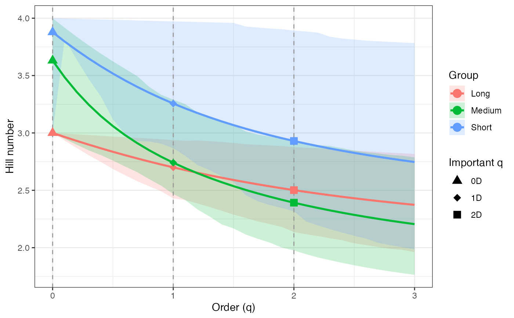
ggplot(hill_profile2_df, aes(x = q, y = observed)) +
geom_ribbon(aes(ymin = lower, ymax = upper), fill = "grey80") +
geom_line(color = "black", linewidth = 1) +
facet_wrap(~ group, scales = "free_y") +
labs(x = "Order (q)", y = "Hill number") +
theme_bw()
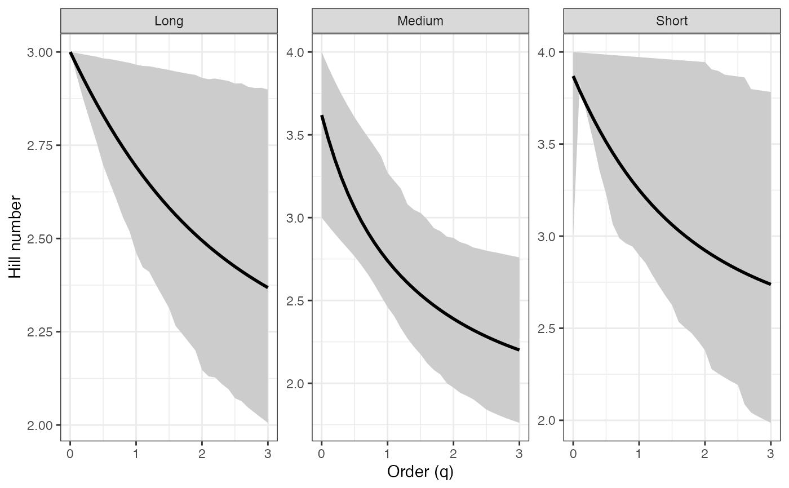
# Rényi profile - BCa CIs ----
renyi_profile2 <-
diversity.profile(pdata$CUAL, group = pdata$LNGS,
parameter = "renyi", ci.type = "bca")
#> Warning: [Group: Long] No bootstrap variation; CI collapses to a point for component 1. Using percentile.
renyi_profile2
#> $Long
#> q observed mean lower upper ci.type
#> 1 0.0 1.0986123 1.0986123 1.0986123 1.098612 perc
#> 2 0.1 1.0885756 1.0866529 1.0763084 1.096843 bca
#> 3 0.2 1.0786646 1.0749332 1.0538555 1.094802 bca
#> 4 0.3 1.0688928 1.0634739 1.0320688 1.092801 bca
#> 5 0.4 1.0592726 1.0522917 1.0102237 1.090737 bca
#> 6 0.5 1.0498155 1.0414000 0.9903210 1.087957 bca
#> 7 0.6 1.0405315 1.0308087 0.9723747 1.087205 bca
#> 8 0.7 1.0314297 1.0205248 0.9536065 1.085078 bca
#> 9 0.8 1.0225177 1.0105528 0.9366771 1.082891 bca
#> 10 0.9 1.0138021 1.0008947 0.9206709 1.080647 bca
#> 11 1.0 1.0052882 0.9915506 0.9014405 1.077168 bca
#> 12 1.1 0.9969801 0.9825189 0.8885235 1.075513 bca
#> 13 1.2 0.9888807 0.9737963 0.8778570 1.076926 bca
#> 14 1.3 0.9809920 0.9653785 0.8651886 1.074748 bca
#> 15 1.4 0.9733151 0.9572599 0.8532502 1.072535 bca
#> 16 1.5 0.9658499 0.9494341 0.8394182 1.069739 bca
#> 17 1.6 0.9585956 0.9418941 0.8249601 1.065647 bca
#> 18 1.7 0.9515507 0.9346321 0.8110452 1.063556 bca
#> 19 1.8 0.9447130 0.9276399 0.7982025 1.061618 bca
#> 20 1.9 0.9380796 0.9209093 0.7879970 1.059696 bca
#> 21 2.0 0.9316472 0.9144314 0.7701082 1.056680 bca
#> 22 2.1 0.9254122 0.9081976 0.7602861 1.054949 bca
#> 23 2.2 0.9193702 0.9021989 0.7509549 1.053253 bca
#> 24 2.3 0.9135169 0.8964267 0.7420891 1.051591 bca
#> 25 2.4 0.9078477 0.8908721 0.7338189 1.049962 bca
#> 26 2.5 0.9023576 0.8855266 0.7240188 1.048368 bca
#> 27 2.6 0.8970416 0.8803818 0.7152068 1.046728 bca
#> 28 2.7 0.8918947 0.8754293 0.7039290 1.041293 bca
#> 29 2.8 0.8869118 0.8706613 0.6971337 1.038875 bca
#> 30 2.9 0.8820876 0.8660698 0.6973430 1.041444 bca
#> 31 3.0 0.8774170 0.8616474 0.6835858 1.034196 bca
#>
#> $Medium
#> q observed mean lower upper ci.type
#> 1 0.0 1.3862944 1.2902085 1.0986123 1.386294 bca
#> 2 0.1 1.3284446 1.2507854 1.0810434 1.364983 bca
#> 3 0.2 1.2771555 1.2145616 1.0632730 1.344323 bca
#> 4 0.3 1.2319160 1.1813815 1.0464656 1.324347 bca
#> 5 0.4 1.1920742 1.1510156 1.0294474 1.305075 bca
#> 6 0.5 1.1569284 1.1231985 1.0124864 1.286518 bca
#> 7 0.6 1.1257925 1.0976566 0.9947401 1.268683 bca
#> 8 0.7 1.0980367 1.0741281 0.9778360 1.251566 bca
#> 9 0.8 1.0731077 1.0523736 0.9557652 1.231258 bca
#> 10 0.9 1.0505342 1.0321809 0.9262639 1.210616 bca
#> 11 1.0 1.0299241 1.0419553 0.8476960 1.136208 bca
#> 12 1.1 1.0109570 0.9957735 0.8665057 1.175076 bca
#> 13 1.2 0.9933740 0.9792696 0.8355569 1.149748 bca
#> 14 1.3 0.9769680 0.9637432 0.8034511 1.133063 bca
#> 15 1.4 0.9615743 0.9491002 0.7688816 1.121554 bca
#> 16 1.5 0.9470625 0.9352615 0.7596472 1.112604 bca
#> 17 1.6 0.9333293 0.9221599 0.7267162 1.098103 bca
#> 18 1.7 0.9202928 0.9097378 0.7096265 1.089815 bca
#> 19 1.8 0.9078876 0.8979457 0.6938601 1.082917 bca
#> 20 1.9 0.8960613 0.8867404 0.6774437 1.074132 bca
#> 21 2.0 0.8847711 0.8760838 0.6634985 1.067841 bca
#> 22 2.1 0.8739819 0.8659418 0.6479878 1.060100 bca
#> 23 2.2 0.8636641 0.8562839 0.6367187 1.052680 bca
#> 24 2.3 0.8537922 0.8470824 0.6244855 1.045955 bca
#> 25 2.4 0.8443440 0.8383115 0.6137946 1.040616 bca
#> 26 2.5 0.8352998 0.8299479 0.6037644 1.035472 bca
#> 27 2.6 0.8266413 0.8219695 0.5944634 1.029697 bca
#> 28 2.7 0.8183519 0.8143559 0.5857468 1.025698 bca
#> 29 2.8 0.8104158 0.8070879 0.5775756 1.021042 bca
#> 30 2.9 0.8028180 0.8001475 0.5699125 1.015571 bca
#> 31 3.0 0.7955444 0.7935176 0.5627224 1.009733 bca
#>
#> $Short
#> q observed mean lower upper ci.type
#> 1 0.0 1.386294 1.3445805 1.0986123 1.386294 bca
#> 2 0.1 1.369609 1.3236255 1.3424028 1.385591 bca
#> 3 0.2 1.353305 1.3032979 1.2982993 1.384888 bca
#> 4 0.3 1.337402 1.2836452 1.2572902 1.384187 bca
#> 5 0.4 1.321914 1.2647026 1.2186130 1.383487 bca
#> 6 0.5 1.306851 1.2464938 1.1718183 1.382788 bca
#> 7 0.6 1.292219 1.2290319 1.1354011 1.382091 bca
#> 8 0.7 1.278021 1.2123206 1.0881377 1.381396 bca
#> 9 0.8 1.264256 1.1963551 1.0853195 1.380701 bca
#> 10 0.9 1.250923 1.1811243 1.0792643 1.380009 bca
#> 11 1.0 1.238017 1.1668558 1.0635215 1.379317 bca
#> 12 1.1 1.225530 1.1527943 1.0484805 1.378628 bca
#> 13 1.2 1.213454 1.1396495 1.0199424 1.377940 bca
#> 14 1.3 1.201780 1.1271498 1.0045976 1.377254 bca
#> 15 1.4 1.190496 1.1152673 0.9843791 1.376569 bca
#> 16 1.5 1.179593 1.1039729 0.9652362 1.375887 bca
#> 17 1.6 1.169058 1.0932378 0.9412696 1.375206 bca
#> 18 1.7 1.158879 1.0830331 0.9295869 1.374527 bca
#> 19 1.8 1.149044 1.0733307 0.9137326 1.373850 bca
#> 20 1.9 1.139542 1.0641032 0.8983724 1.373174 bca
#> 21 2.0 1.130361 1.0553243 0.8838370 1.372501 bca
#> 22 2.1 1.121489 1.0469689 0.8541757 1.365471 bca
#> 23 2.2 1.112914 1.0390127 0.8419428 1.363351 bca
#> 24 2.3 1.104627 1.0314331 0.8304186 1.358565 bca
#> 25 2.4 1.096616 1.0242084 0.8195540 1.355461 bca
#> 26 2.5 1.088871 1.0173181 0.8093036 1.353374 bca
#> 27 2.6 1.081382 1.0107432 0.7913814 1.351207 bca
#> 28 2.7 1.074140 1.0044654 0.7639430 1.349958 bca
#> 29 2.8 1.067136 0.9984678 0.7574330 1.348720 bca
#> 30 2.9 1.060361 0.9927344 0.7512064 1.347491 bca
#> 31 3.0 1.053806 0.9872503 0.7217264 1.346273 bca
#>
#> attr(,"R")
#> [1] 1000
#> attr(,"conf")
#> [1] 0.95
#> attr(,"parameter")
#> [1] "renyi"
#> attr(,"ci.type")
#> [1] "bca"
renyi_profile2_df <- dplyr::bind_rows(renyi_profile2, .id = "group")
renyi_points2_df <- renyi_profile2_df %>%
filter(q %in% important_q) %>%
mutate(order_label = factor(q, levels = important_q,
labels = important_labels))
ggplot(renyi_profile2_df, aes(x = q, y = observed,
color = group, fill = group)) +
geom_ribbon(aes(ymin = lower, ymax = upper), alpha = 0.2, color = NA) +
geom_line(linewidth = 1) +
geom_vline(xintercept = c(0, 1, 2), linetype = "dashed",
color = "grey60") +
geom_point(data = renyi_points2_df, aes(shape = order_label),
size = 3, stroke = 1, inherit.aes = TRUE) +
scale_shape_manual(values = c(17, 19, 15), name = "Important q") +
labs(x = "Order (q)", y = "Hill number",
color = "Group", fill = "Group") +
theme_bw()
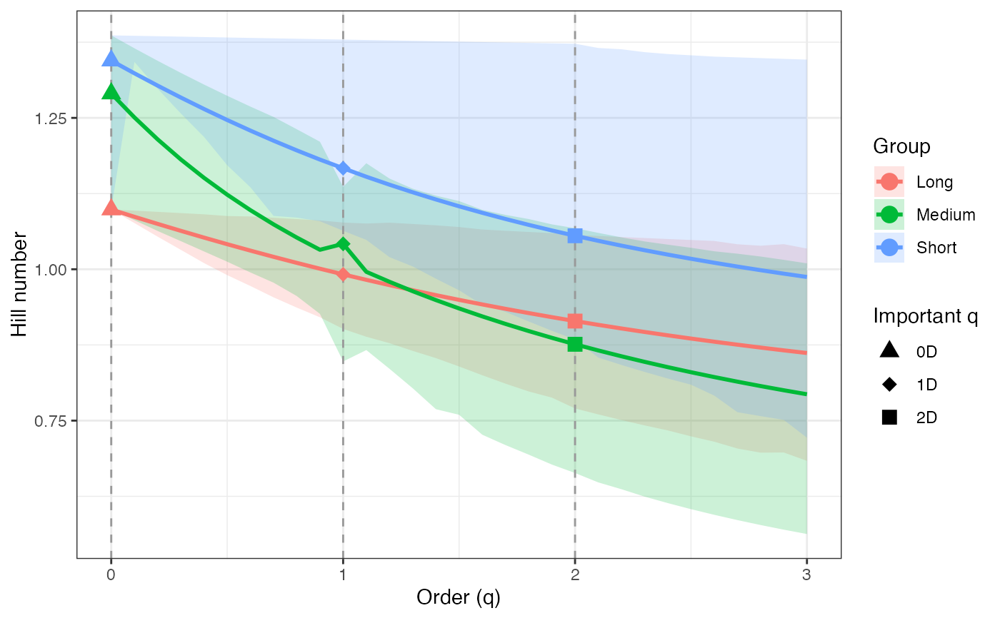
ggplot(renyi_profile2_df, aes(x = q, y = observed)) +
geom_ribbon(aes(ymin = lower, ymax = upper), fill = "grey80") +
geom_line(color = "black", linewidth = 1) +
facet_wrap(~ group, scales = "free_y") +
labs(x = "Order (q)", y = "Hill number") +
theme_bw()
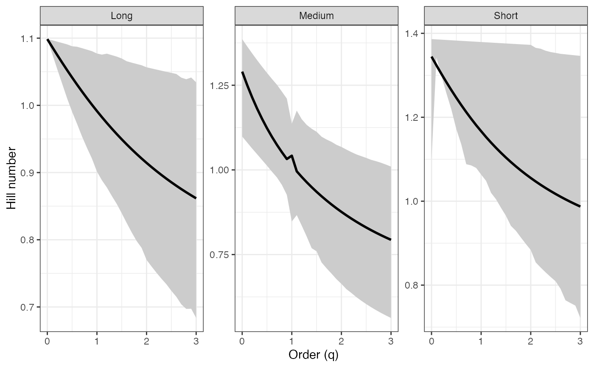
# Tsallis profile - BCa CIs ----
tsallis_profile2 <-
diversity.profile(pdata$CUAL, group = pdata$LNGS,
parameter = "tsallis", ci.type = "bca")
#> Warning: [Group: Long] No bootstrap variation; CI collapses to a point for component 1. Using percentile.
tsallis_profile2
#> $Long
#> q observed mean lower upper ci.type
#> 1 0.0 2.0000000 2.0000000 2.0000000 2.0000000 perc
#> 2 0.1 1.8485612 1.8434932 1.8160646 1.8706661 bca
#> 3 0.2 1.7126236 1.7039405 1.6544001 1.7511138 bca
#> 4 0.3 1.5903508 1.5791666 1.5134997 1.6412935 bca
#> 5 0.4 1.4801432 1.4673074 1.3888661 1.5401052 bca
#> 6 0.5 1.3806058 1.3667619 1.2815231 1.4456950 bca
#> 7 0.6 1.2905205 1.2761514 1.1885764 1.3619406 bca
#> 8 0.7 1.2088223 1.1942869 1.1040051 1.2825075 bca
#> 9 0.8 1.1345790 1.1201399 1.0301587 1.2090933 bca
#> 10 0.9 1.0669734 1.0528192 0.9643838 1.1411943 bca
#> 11 1.0 1.0052882 0.9915506 0.9014405 1.0771681 bca
#> 12 1.1 0.9488928 0.9356604 0.8501934 1.0196957 bca
#> 13 1.2 0.8972324 0.8845609 0.8051125 0.9688553 bca
#> 14 1.3 0.8498176 0.8377383 0.7620214 0.9187118 bca
#> 15 1.4 0.8062167 0.7947423 0.7228861 0.8721409 bca
#> 16 1.5 0.7660477 0.7551778 0.6855240 0.8285303 bca
#> 17 1.6 0.7289728 0.7186972 0.6506908 0.7873350 bca
#> 18 1.7 0.6946920 0.6849938 0.6188433 0.7500331 bca
#> 19 1.8 0.6629392 0.6537970 0.5899769 0.7153540 bca
#> 20 1.9 0.6334774 0.6248670 0.5644011 0.6829970 bca
#> 21 2.0 0.6060957 0.5979911 0.5370370 0.6523920 bca
#> 22 2.1 0.5806057 0.5729804 0.5151778 0.6242300 bca
#> 23 2.2 0.5568392 0.5496664 0.4949133 0.5978759 bca
#> 24 2.3 0.5346455 0.5278990 0.4760835 0.5731900 bca
#> 25 2.4 0.5138895 0.5075439 0.4586272 0.5500446 bca
#> 26 2.5 0.4944499 0.4884806 0.4416665 0.5283233 bca
#> 27 2.6 0.4762176 0.4706013 0.4260876 0.5079049 bca
#> 28 2.7 0.4590941 0.4538089 0.4105193 0.4881016 bca
#> 29 2.8 0.4429909 0.4380158 0.3972095 0.4699677 bca
#> 30 2.9 0.4278278 0.4231431 0.3864127 0.4535565 bca
#> 31 3.0 0.4135320 0.4091195 0.3726747 0.4368369 bca
#>
#> $Medium
#> q observed mean lower upper ci.type
#> 1 0.0 3.0000000 2.6660000 2.0000000 3.0000000 bca
#> 2 0.1 2.5617123 2.3328030 1.8285655 2.6844984 bca
#> 3 0.2 2.2224763 2.0642033 1.6763676 2.4141718 bca
#> 4 0.3 1.9552854 1.8445652 1.5433267 2.1814649 bca
#> 5 0.4 1.7411443 1.6625128 1.4243315 1.9802072 bca
#> 6 0.5 1.5665950 1.5096924 1.3177118 1.8053440 bca
#> 7 0.6 1.4220235 1.3799082 1.2217231 1.6527218 bca
#> 8 0.7 1.3004971 1.2685156 1.1363770 1.5189170 bca
#> 9 0.8 1.1969637 1.1719939 1.0529354 1.3958157 bca
#> 10 0.9 1.1076994 1.0876426 0.9705178 1.2869140 bca
#> 11 1.0 1.0299241 1.0419553 0.8476960 1.1362075 bca
#> 12 1.1 0.9615347 0.9475194 0.8300253 1.1086774 bca
#> 13 1.2 0.9009177 0.8887936 0.7694865 1.0272255 bca
#> 14 1.3 0.8468176 0.8361377 0.7141565 0.9605766 bca
#> 15 1.4 0.7982434 0.7886970 0.6619928 0.9037780 bca
#> 16 1.5 0.7544018 0.7457697 0.6320359 0.8533491 bca
#> 17 1.6 0.7146493 0.7067738 0.5890025 0.8042840 bca
#> 18 1.7 0.6784574 0.6712223 0.5592949 0.7623929 bca
#> 19 1.8 0.6453869 0.6387042 0.5324964 0.7243869 bca
#> 20 1.9 0.6150691 0.6088702 0.5072064 0.6885233 bca
#> 21 2.0 0.5871914 0.5814213 0.4849537 0.6562500 bca
#> 22 2.1 0.5614865 0.5561001 0.4633877 0.6258396 bca
#> 23 2.2 0.5377246 0.5326838 0.4452029 0.5977141 bca
#> 24 2.3 0.5157061 0.5109782 0.4276670 0.5717484 bca
#> 25 2.4 0.4952573 0.4908140 0.4118258 0.5478815 bca
#> 26 2.5 0.4762260 0.4720422 0.3971464 0.5256212 bca
#> 27 2.6 0.4584783 0.4545317 0.3835626 0.5046712 bca
#> 28 2.7 0.4418959 0.4381667 0.3709182 0.4853680 bca
#> 29 2.8 0.4263738 0.4228442 0.3591204 0.4671361 bca
#> 30 2.9 0.4118190 0.4084731 0.3480871 0.4498909 bca
#> 31 3.0 0.3981481 0.3949716 0.3377459 0.4336378 bca
#>
#> $Short
#> q observed mean lower upper ci.type
#> 1 0.0 3.0000000 2.8550000 2.0000000 3.0000000 bca
#> 2 0.1 2.7003331 2.5592593 2.6081425 2.7555529 bca
#> 3 0.2 2.4405950 2.3059140 2.2816460 2.5350311 bca
#> 4 0.3 2.2146076 2.0877223 2.0159263 2.3358938 bca
#> 5 0.4 2.0172417 1.8988270 1.7958421 2.1558838 bca
#> 6 0.5 1.8442276 1.7344696 1.5932472 1.9929944 bca
#> 7 0.6 1.6920012 1.5907663 1.4371266 1.8454410 bca
#> 8 0.7 1.5575795 1.4645334 1.2867563 1.7116355 bca
#> 9 0.8 1.4384586 1.3531485 1.2121175 1.5901636 bca
#> 10 0.9 1.3325309 1.2544421 1.1396120 1.4797653 bca
#> 11 1.0 1.2380168 1.1668558 1.0635215 1.3793174 bca
#> 12 1.1 1.1534096 1.0881503 0.9953866 1.2878177 bca
#> 13 1.2 1.0774297 1.0177974 0.9226411 1.2043718 bca
#> 14 1.3 1.0089869 0.9544895 0.8673429 1.1281808 bca
#> 15 1.4 0.9471496 0.8973274 0.8136961 1.0585306 bca
#> 16 1.5 0.8911198 0.8455474 0.7656691 0.9947826 bca
#> 17 1.6 0.8402110 0.7984985 0.7191741 0.9363652 bca
#> 18 1.7 0.7938317 0.7556229 0.6835184 0.8827665 bca
#> 19 1.8 0.7514702 0.7164414 0.6482075 0.8335280 bca
#> 20 1.9 0.7126828 0.6805406 0.6160998 0.7882382 bca
#> 21 2.0 0.6770833 0.6475625 0.5868056 0.7465278 bca
#> 22 2.1 0.6443352 0.6171960 0.5538302 0.7068182 bca
#> 23 2.2 0.6141439 0.5891700 0.5299181 0.6711826 bca
#> 24 2.3 0.5862509 0.5632473 0.5078843 0.6378289 bca
#> 25 2.4 0.5604291 0.5392197 0.4875222 0.6073147 bca
#> 26 2.5 0.5364780 0.5169040 0.4686533 0.5792141 bca
#> 27 2.6 0.5142206 0.4961387 0.4490566 0.5530609 bca
#> 28 2.7 0.4934997 0.4767805 0.4277144 0.5289597 bca
#> 29 2.8 0.4741760 0.4587025 0.4134473 0.5065334 bca
#> 30 2.9 0.4561251 0.4417916 0.4000222 0.4856386 bca
#> 31 3.0 0.4392361 0.4259470 0.3819444 0.4661458 bca
#>
#> attr(,"R")
#> [1] 1000
#> attr(,"conf")
#> [1] 0.95
#> attr(,"parameter")
#> [1] "tsallis"
#> attr(,"ci.type")
#> [1] "bca"
tsallis_profile2_df <- dplyr::bind_rows(tsallis_profile2, .id = "group")
tsallis_points2_df <- tsallis_profile2_df %>%
filter(q %in% important_q) %>%
mutate(order_label = factor(q, levels = important_q,
labels = important_labels))
ggplot(tsallis_profile2_df, aes(x = q, y = observed,
color = group, fill = group)) +
geom_ribbon(aes(ymin = lower, ymax = upper), alpha = 0.2, color = NA) +
geom_line(linewidth = 1) +
geom_vline(xintercept = c(0, 1, 2), linetype = "dashed",
color = "grey60") +
geom_point(data = tsallis_points2_df, aes(shape = order_label),
size = 3, stroke = 1, inherit.aes = TRUE) +
scale_shape_manual(values = c(17, 19, 15), name = "Important q") +
labs(x = "Order (q)", y = "Hill number",
color = "Group", fill = "Group") +
theme_bw()
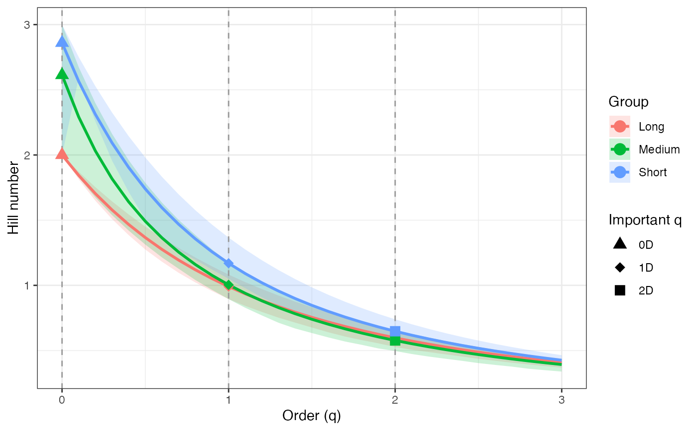
ggplot(tsallis_profile2_df, aes(x = q, y = observed)) +
geom_ribbon(aes(ymin = lower, ymax = upper), fill = "grey80") +
geom_line(color = "black", linewidth = 1) +
facet_wrap(~ group, scales = "free_y") +
labs(x = "Order (q)", y = "Hill number") +
theme_bw()
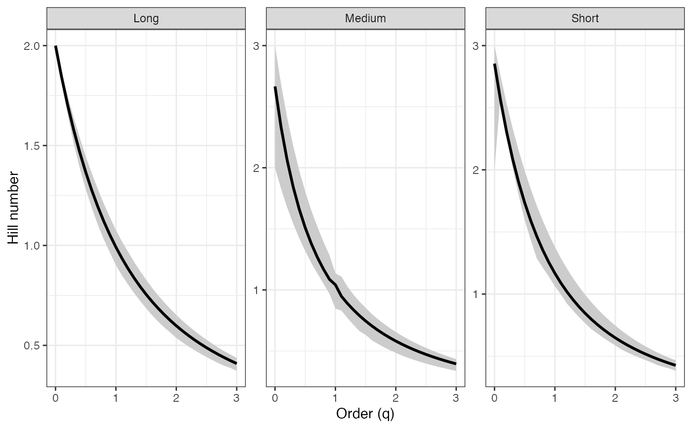